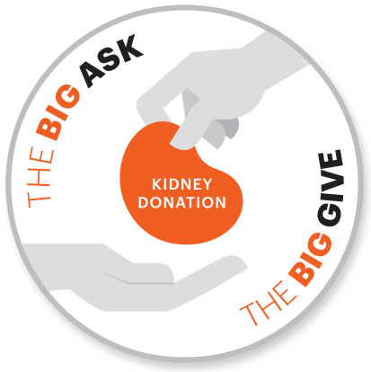
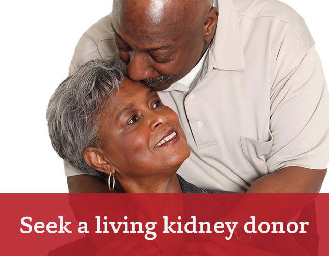

Are you Eligible?
1) Age > 18
2) Donor must possess physically healthy
Donors must be healthy individuals. If a donor has a past history of suffering from the following problems, or if these are discovered during the medical evaluation, a donor may be declined.
Free from,
- High blood pressure
- Diabetes
- Cancer
- HIV
- Hepatitis
- Lung disease
- Risk factors for the development of blood clots
- Low kidney function (usually creatinine clearance of 80ml/min (a test of kidney function))

3) Mental fitness
If a donor has a history of mental health problems including a remote history of anxiety or other common disorders, psychiatric evaluation has tobe done. Donors with current mental health concerns may not be candidates for living kidney donation.
4) Obesity
Obesity is an independent risk factor for kidney disease. Candidates with a body mass index of over 35 will generally not be considered for donation unless an individual is very muscular. Individuals with a BMI of >25 will meet with a dietitian to discuss strategies to remain at a healthy weight for life.

Matching and Compatibility
You may have heard discussions about “matching” and kidney transplantation. There are actually three tests that are done to evaluate donors. They are blood type, crossmatch, and HLA testing. This blood test is the first step in the process of living donation and determines if you are compatible or a “match” to your recipient.
Blood Typing
There are 4 different blood types. The most common blood type in the population is type O. The next most common is blood type A, then B, and the rarest is blood type AB. The blood type of the donor must be compatible with the recipient. The rules for blood type in transplantation are the same as they are for blood transfusion. Some blood types can give to others and some may not. Blood type O is considered the universal donor. People with blood type O can give to any other blood type. Blood type AB is called the universal recipient because they can receive an organ or blood from people with any blood type.
The chart below shows which blood type can donate to which.
| If your blood type is: |
You can donate to these blood types: |
| TYPE O |
TYPE O, A, B, AB |
| TYPE A |
TYPE A, AB |
| TYPE B |
TYPE B, AB |
| TYPE B |
TYPE B, AB |